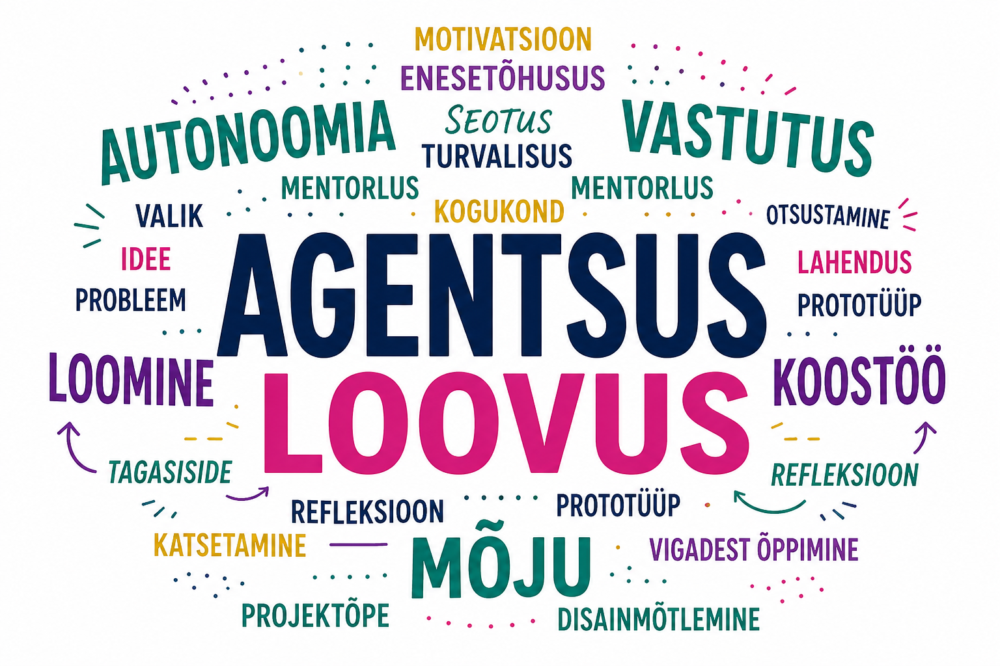

MAGISTRITÖÖ 2026
Õppija agentsuse ja loovuse toetamiseks formaalhariduses
Meelis Külaots
Kristina Kuznetsova-Bogdanovits, Astrid Külaots
Süsteemsuse puudus
Formaalhariduses puuduvad terviklikud mudelid, mis toetaksid loovust ja agentsust pidevalt, mitte ainult üksikute projektidena.
Suutlikkus oma õppimist tähenduslikult suunata.
Katsetuspõhine lähenemine uute seoste loomiseks.
Sotsiaalne tugi ühise tegutsemiseni.
Seotus päriselu probleemidega.
Arendada mudelit, mis toetab õppija agentsust ja loovust.
Easterday jt (2018) mudel: Teooria -> Intervjuud -> Piloot -> Mudel.
Elva Gümnaasiumi juhtkond, huvijuht, õpetaja (n=3) ja fookusgrupp (n=9).
Temaatiline analüüs (Braun & Clarke):
Kodeerimine: Tähenduslike üksuste esiletõstmine (nt "omaalgatus").
Süntees: Teemade seostamine teoreetilise süsteemiga.
Isiklik huvi on kriitiline õppimise käivitaja.
Õppijal on suurem kontroll oma tegevuse eest.
Koostöö on protsessi keskmes.
Õpetaja on usalduslik teekaaslane.
Paindlikkus on süvenemise peamine eeldus.
Protsessiloogika peab olema arusaadav.
Motivatsioon kujuneb ühises tegevuses.
Kultuuriinkubaatori parim vorm on gümnaasiumi valikkursus.
Agentsus ei teki iseenesest, vaid nõuab tähenduslikult toetatud õpiteekonda.
Bandura (2001), Brown (2008), Easterday jt (2018), Ryan & Deci (2000).
Mudeli terviklik piloteerimine ja pikaajalise mõju uurimine õppijate agentsusele.
Küsimused ja arutelu
Meelis Külaots | 2026